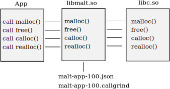

MALT instrument you program by wrapping the malloc (and free, calloc...) thanks to Unix symbol overriding through usage of LD_PRELOAD. Additionally, it uses backtrace() to reconstruct the call stack on each call to memory functions.
MALT provides a web GUI based on new technologies like NodeJS, AngularJS, D3JS. Thanks to this it might be easier for you to run MALT on a remote node by forwarding the connection via SSH.
malt ./my_program
malt-webview \
-i ./malt-my_program-1588.json
browser http://localhost:8080
MALT is used by running the profiling tool on your command just as you do with valgrind. Then, open the profile file with the MALT webserver and connect to it with your browser by using http://localhost:8080.